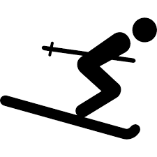
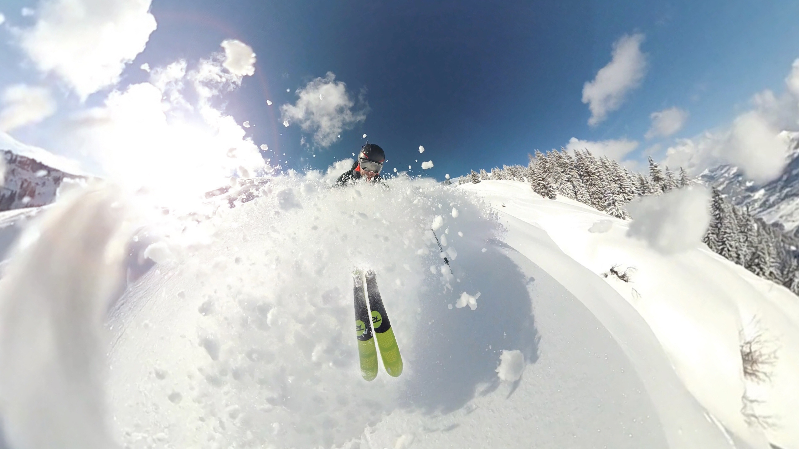

OPEN TODAY 8:45 to 4:30
NOTE: Season's Pass Sale begins Today!
If you dream of a ski vacation this winter but can’t afford it,
consider one of these budget-friendly ski resorts. Many offer great runs, spectacular scenery, and even fewer crowds – without the high cost.

DISCOVER WHOLE NEW PLAYGROUND
Mt. Rainier Ski and Snow Haven
This no-frills mountain is in the Pacific Northwest Washington—Mt—Rainer Ski & Snow Park, located at the top of the iconic Mt. Adam.
Mt. Rainer provides epic skiing and snowboarding for all ages and abilities. With 60 runs, 8 lifts, an epic terrain park, a comprehensive ski school, and a friendly community, this unique place offers something for everyone.
Mt. Rainer prides itself on providing a relaxed, family atmosphere for skiers and riders of every ability!
The Mountain
Get your eyes on the mountain then make plans to get your boards on snow!

Lesson and Rental
Group & Private instruction for all disciplines.
All-inclusive packages. Rental, sales, and service.